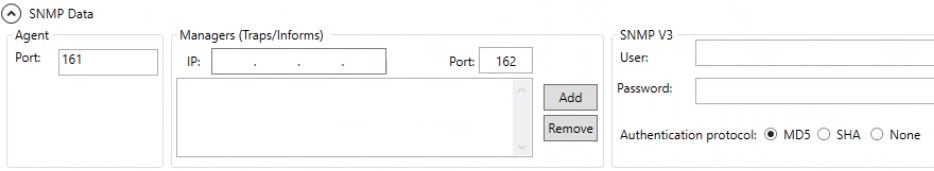

Set SNMP Data
In this procedure you will specify data relevant to the SNMP protocol in the SNMP Data expander.
- In the Agent panel, enter the agent Port.
NOTE: If not set, SNMP agent default port 161 will be used. - In the Managers (Traps/Informs) panel, specify the list of managers that will notify the SNMP agent:
a. Enter the manager IP.
b. Enter Port on which all traps will be notified (default port is 162).
c. Repeat the previous steps and click Add to add all the required managers.
NOTE: If you do not set the IP manager, the manager of the local station will be considered. If you want to set multiple IP managers, remember to include in the list also the manager of the local station. To remove any unwanted manager, select it in the list and click Remove. - (Optional) To secure SNMP V3 communication when connecting to the SNMP agent, in the SNMP V3 panel, you can optionally specify one or multiple of the following settings:
- User who is authorized to communicate with the SNMP agent
- Password for the user's authentication
- Authentication protocol algorithm for message security (MD5, SHA, or None)
